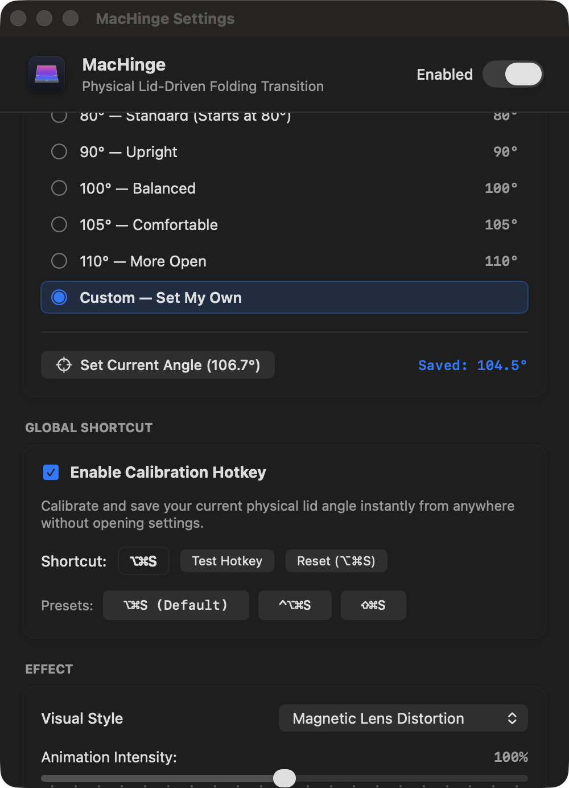
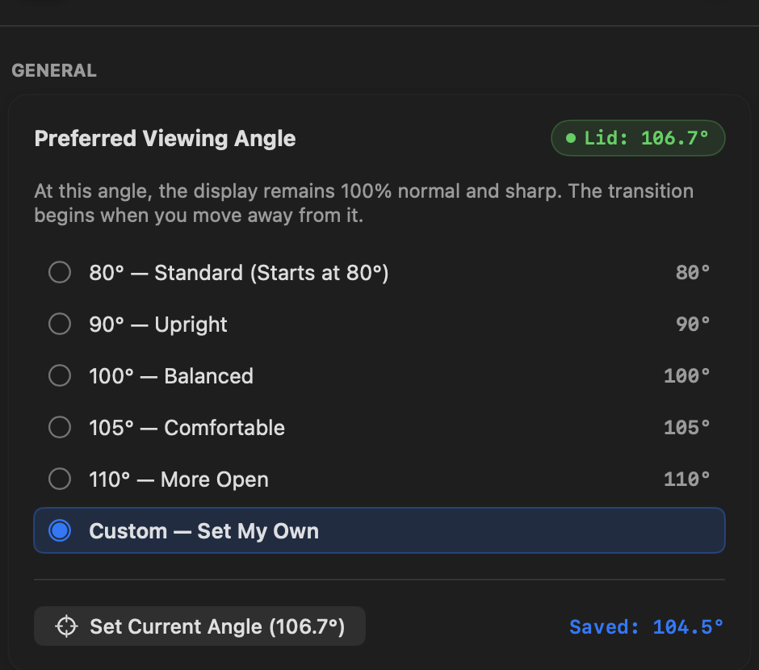
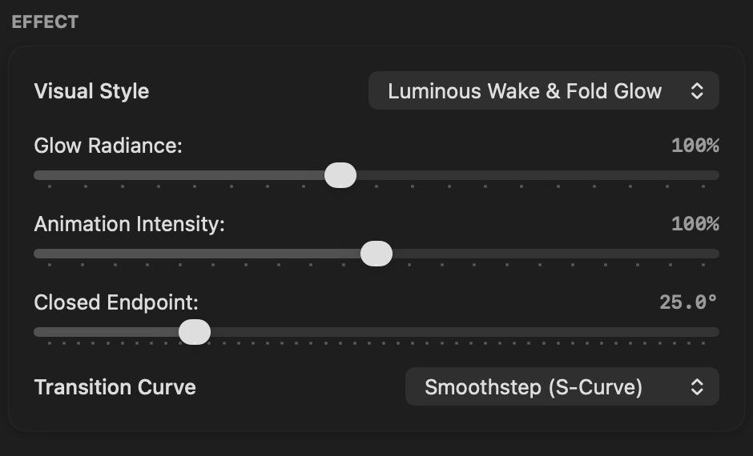
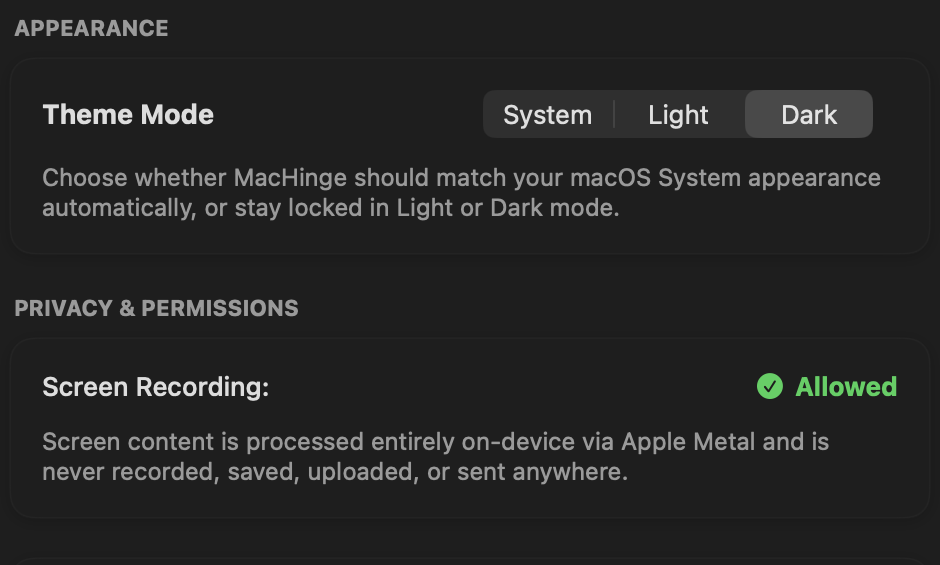
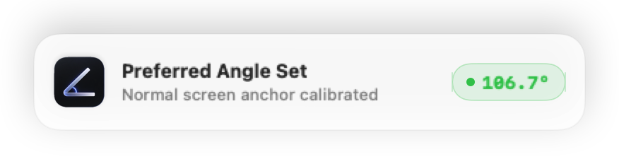

Your MacBook has a hinge.
MacHinge gives it an effect.
Turn your MacBook’s lid movement into a visual experience. MacHinge reacts to the physical hinge angle in real time and transforms it into fluid, GPU-accelerated screen transitions.
Luminous Wake & Fold Glow
Progressive white radiance and volumetric bloom awakening across the fold horizon as the lid passes below the closing threshold.
Scroll down to close the lid forward • Scroll up to raise it open
Apple Frosted Glass
Multi-pass Poisson disk depth blur and glass diffusion responding continuously to the physical hinge angle.
Scroll down to close the lid forward • Scroll up to raise it open
Magnetic Lens Distortion
Gravitational pincushion warp and optical compression pulling towards the hinge crease during closure.
Scroll down to close the lid forward • Scroll up to raise it open
Make it behave your way.
Tune the angle, effect, and appearance from one focused settings window.


Your natural posture, anchored.
At this angle, the display remains 100% normal and sharp. The transition begins when you move away from it.

Craft the visual response.
Switch between Frosted Glass, Luminous Wake, and Lens Distortion. Fine-tune glow radiance, animation intensity, and custom transition curves.

100% on-device. Zero data leaves your Mac.
Screen content is processed entirely on-device via Apple Metal and is never recorded, saved, uploaded, or sent anywhere.
Set your perfect angle.
Calibrate and save your current physical lid angle instantly from anywhere without opening settings.
Position your display
Open your MacBook to the exact physical angle you prefer to work at.
Press the global shortcut
Trigger the system-wide calibration shortcut anytime, from any active app.
⌥⌘S • Configurable in Settings
Instant confirmation HUD
A lightweight macOS notification appears showing your newly calibrated anchor angle.
